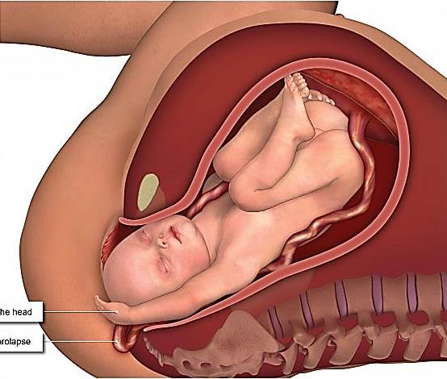

Cephalic presentation in which a limb (usually upper limb and less commonly lower limb) prolapses beside the presenting part.
Compound presentation is a cephalic presentation in which a limb (usually upper limb and less commonly lower limb) prolapses beside the presenting part.
Two parts of the fetus present at the pelvic inlet simultaneously — the head and a limb. This is the hallmark of a compound presentation: the presenting part is "compounded" of two anatomical structures instead of one.
The source enumerates 7 etiologic factors — all of which create extra room at the pelvic inlet and allow a limb to slip down beside the head:
Smaller fetus, more space around the head → limb can prolapse alongside.
Loss of the bag of forewaters removes the cushion that holds the head applied to the cervix.
Excess fluid → fetus is mobile; limb floats down into the inlet.
Lax abdominal & uterine walls → poor support of the presenting part.
Head cannot engage properly → limb descends through the gap.
Space-occupying lesion prevents head engagement → limb prolapses.
Crowding in utero + one twin's limb may descend with the other twin's head.
All create poor fit or excess room at the pelvic inlet.
Delayed engagement.
The fetal head does not descend into the pelvis at the expected time because the prolapsed limb is occupying space alongside it.
The prolapsed limb is felt beside the presenting part on vaginal examination.
The examiner's fingers find the fetal head and, alongside it, a small hand or foot — confirming the compound presentation.
Gently try to reduce the prolapsed limb upwards above the pelvic brim and hold it till contraction, then push the head down into the pelvis.
This maneuvre is performed between contractions so the relaxed uterus allows the limb to be lifted above the head; the subsequent contraction then drives the head into the pelvis.
Because the presenting part does not fit the pelvic inlet snugly, the umbilical cord can slip past the head and prolapse — a true obstetric emergency. Any patient with a compound presentation in labor must be monitored continuously for cord prolapse. A sudden fetal heart rate deceleration should be assumed to be cord prolapse until proven otherwise.

Each group of student is requested to prepare a diagram illustrative of compound presentation.
Why this activity matters: Drawing the fetus in utero with the head at the pelvic inlet and a prolapsed limb beside it forces you to visualise the exact 3-D relationship that defines a compound presentation — far more durable than just reading the words "head + limb prolapse."
Suggested steps for the group:
Please complete the self-assessment Google Form:
Google Form: https://forms.gle/szMrPB7z9Q1LaTid6
What the form covers (typical chapter checks):
.src-viz card. The image is extracted to extracted_images/25_compound_presentation/ for archival.https://forms.gle/szMrPB7z9Q1LaTid6 (reproduced verbatim from source).